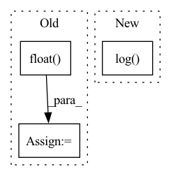

Pattern ID :27490

Before Change
Xs = stft(wavs.data.cpu().numpy(), n_fft=1024, hop_length=512)
Xs = np.log(1 + np.abs(Xs))
Xs = torch.Tensor(Xs).float().to(self.device)
// Concatenate labels (due to data augmentation)
if stage == sb.Stage.TRAIN and False:
After Change
X_stft = self.modules.compute_stft(wavs)
X_stft_power = sb.processing.features.spectral_magnitude(X_stft, power=self.hparams.spec_mag_power)
X_stft_logpower = torch.log(X_stft_power + 1).transpose(1, 2)
// Concatenate labels (due to data augmentation)
if stage == sb.Stage.TRAIN and False:
In pattern: SUPERPATTERN
Frequency: 3
Non-data size: 3
Instances
Fragment ID: 81593613
Project Name: speechbrain/speechbrain
Commit Name: 5141f8cfe46029b6dd2c051199291f4c21cae8e0
Time: 2022-11-20
Author: me@francescopaissan.it
File Name: recipes/ESC50/classification/train_interpreter.py
M Class Name: InterpreterESC50Brain
N Class Name: InterpreterESC50Brain
M Method Name: compute_objectives(4)
N Method Name: compute_objectives(4)
M Parent Class: sb.core.Brain
N Parent Class: sb.core.Brain
M File Name: recipes/ESC50/classification/train_interpreter.py
N File Name: recipes/ESC50/classification/train_interpreter.py
M Start Line: 147
M End Line: 173
N Start Line: 150
N End Line: 171
'>
Before Change
if norm_feature:
node_feat = th.nn.functional.normalize(node_feat, p=2.0, dim=-1)
degs = graph.out_degrees().float().clamp(min=1)
norm = th.pow(degs, -0.5)
shp = norm.shape + (1,) * (node_feat.dim() - 1)
norm = th.reshape(norm, shp)
After Change
def load_dgl_graph(base_path):
graphs, _ = dgl.load_graphs(os.path.join(base_path, "graph.bin"))
edge_feat = th.cat((minMaxScaling(graphs[0].in_degrees().unsqueeze_(1).float().add(1).log()),
minMaxScaling(graphs[0].out_degrees().unsqueeze_(1).float().add(1).log())), dim=1)
graph = graphs[0]
graph = dgl.to_bidirected(graph, copy_ndata=True)
'>
Fragment ID: 81593614
Project Name: langgege-cqu/maxp_dgl
Commit Name: 5f428bb0d6bfb9dad16f32ca3d65785469b69c00
Time: 2021-12-11
Author: 8747734+bugczw@user.noreply.gitee.com
File Name: maxp_model_czw/unimp/util.py
M Class Name: AnonimousClass
N Class Name: AnonimousClass
M Method Name: load_dgl_graph(1)
N Method Name: load_dgl_graph(2)
M Parent Class:
N Parent Class:
M File Name: maxp_model_czw/unimp/util.py
N File Name: maxp_model_czw/unimp/util.py
M Start Line: 8
M End Line: 52
N Start Line: 13
N End Line: 47
'>
Before Change
mask_4_remove_negatives = negative_mask[labels]
mask_4_remove_negatives = self.remove_diag(mask_4_remove_negatives)
avg_positive = int(mask_4_remove_negatives.detach().float().sum(dim=1).mean())
inst2inst_positives = instance_zone*mask_4_remove_negatives
inst2embed_positive = torch.exp(self.cosine_similarity(inst_embed, proxy)*avg_positive*temperature)
After Change
numerator0 = inst2inst_positives.sum(dim=1)
numerator1 = inst2embed_positive
denomerator = torch.cat([torch.unsqueeze(inst2embed_positive, dim=1), instance_zone], dim=1).sum(dim=1)
criterion = -torch.log(numerator0/denomerator).mean() - torch.log(numerator1/denomerator).mean()
return criterion
def calc_derv4gp(netD, real_data, fake_data, real_labels, device):
'>
Fragment ID: 81593611
Project Name: postech-cvlab/pytorch-studiogan
Commit Name: 8b8398ac39e45163161bf0aee8f5df369b12121d
Time: 2020-08-03
Author: first287@naver.com
File Name: utils/losses.py
M Class Name: Conditional_Embedding_Contrastive_loss
N Class Name: Conditional_Embedding_Contrastive_loss
M Method Name: forward(6)
N Method Name: forward(6)
M Parent Class: torch.nn.Module
N Parent Class: torch.nn.Module
M File Name: utils/losses.py
N File Name: utils/losses.py
M Start Line: 117
M End Line: 125
N Start Line: 121
N End Line: 125